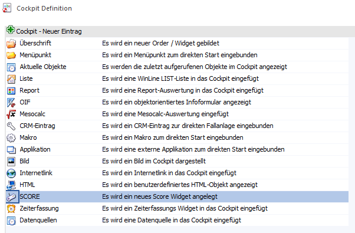
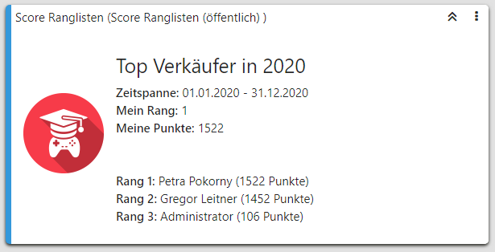
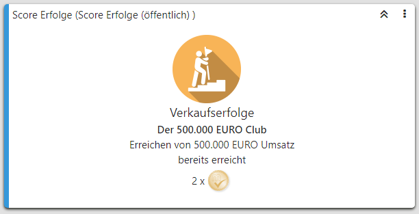
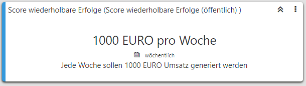
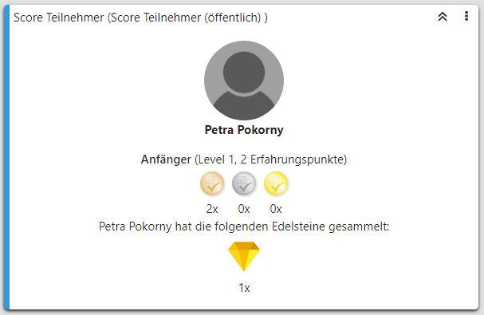
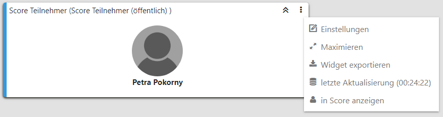

SCORE Widgets können über
1 WinLine START (Klick auf das Cockpit-Register)
1 Cockpit Definition (Ribbonbutton)
1 neuer Eintrag (Ribbonbutton)
1 SCORE (Tabellenauswahl)
neu hinzugefügt werden.

Nach Vergabe einer Bezeichnung und der Selektion eines Widget-Typs können innerhalb des Cockpits über die jeweiligen Widget-Einstellungen weitere Definitionen vorgenommen werden.
Die Widget-Typen für SMART SCORE:
ü 0 SCORE Rangliste

ü 1 SCORE Erfolge

ü 2 SCORE wiederholbare
Erfolge

ü 3 SCORE Teilnehmer

ü 4 SCORE Geschäftsziel
Gibt Informationen eines
SCORE-Geschäftziels wieder.
Hinweis
Das folgend aufgeführte "SCORE Teilnehmer" Widget steht exemplarisch für alle SCORE-Widgets.

Ø Einstellungen
Öffnet Einstellungen des Widgets, über welches Informationen abgerufen, bzw. Anpassungen hinsichtlich der nachfolgend aufgeführten Punkte vorgenommen werden können:
ü "Überschrift"
Ermöglicht die
Anpassung der Widget-Überschrift.
ü "Datenquelle"
Gibt die
bezugnehmende Datenquelle des Widgets als Information aus.
ü "Rang 1-3 anzeigen"
Steht im
Ranglisten-Widget zur Auswahl. Diese Checkbox ermöglicht nach der Aktivierung
das Anzeigen der ersten 3. Ränge innerhalb des Widgets.
ü "SCORE-Element Name" (als
Selektionsauswahl)
Steht im Ranglisten-, Geschäftsziel- und (wiederholbaren)
Erfolgs-Widget zur Verfügung. Gem. der Anzahl der zur Verfügung stehenden
SCORE-Elemente kann hier mit Bezug auf das Widget das Richtige selektiert
werden.
ü "Level anzeigen (wenn
vorhanden)"
Steht im Teilnehmer-Widget zur Auswahl. Sofern es eine
hinterlegte Level-Struktur im SMART SCORE gibt, kann der Bezug zum Teilnehmer
angezeigt werden.
ü "Münzen anzeigen"
Steht im
SCORE-Teilnehmer-Widget zur Auswahl. Wenn das SMART SCORE Element "Meso-Coins"
beinhaltet, können diese mit aufgeführt werden.
ü "Edelsteine anzeigen (wenn
vorhanden)"
Steht nur im SCORE-Teilnehmer-Widget zur Auswahl. Wenn das SMART
SCORE Element "Edelsteine" beinhaltet, können diese mit aufgeführt werden.
ü "Farbe"
Die Farbe des
SCORE-Widgets kann angepasst werden.
Ø Maximieren
Maximiert das Widget und füllt das gesamte WinLine Cockpit aus. Kann analog dazu auf identischem Weg wieder minimiert werden.
Ø Widget exportieren
Ermöglicht Zugriff aus das System und bietet das Speichern/Exportieren des Mesonic Widgets im *.mwd - Format.
Ø letzte Aktualisierung (Anzahl Stunden:Minuten:Sekunden)
Zeigt die Dauer an, seitdem die bezugnehmende Datenquelle zuletzt aktualisiert wurde. Die Angabe erfolgt im Format "Stunden":"Minuten":"Sekunden".
Ø in SCORE anzeigen
Öffnet innerhalb des WinLine SMART SCORE das passende SCORE Element.